Odoo ERP Implementation
End-to-end deployment configured around your business requirements. We handle database setup, chart of accounts, user roles, security rules, and initial data migration.
Explore ImplementationFrom ERP implementation and custom Odoo development to business process automation, ZodoTech helps you simplify operations, connect workflows, and build a stronger foundation for growth.

When teams spend hours bridging software gaps manually, growth stalls. See how tailored ERP configuration and clean module development solve root operational friction.
Staff re-keying sales orders into accounting, generating invoices by hand, or tracking stock across spreadsheets leads to human error and delayed order fulfilment.
Separate platforms for CRM, e-commerce, warehousing, and finance create mismatched data, double bookings, and zero single-source-of-truth across your organization.
Decision makers waiting days for monthly spreadsheet consolidation cannot detect inventory shortages, delayed shipments, or cash-flow imbalances in real time.
Purchase orders and discount approvals getting stuck in email chains delay procurement and frustrate customers. Automated multi-tier rules streamline every decision.
Generic ERP setups force your business to change working workflows to fit rigid software, rather than adapting the software to support your proprietary competitive advantage.
We extend standard Odoo with clean inheritance, automated server actions, and resilient API bridges to eliminate manual friction while preserving clean upgrade paths.
Whether implementing Odoo for the first time or extending an existing setup, we deliver maintainable, engineering-first ERP solutions.
End-to-end deployment configured around your business requirements. We handle database setup, chart of accounts, user roles, security rules, and initial data migration.
Explore ImplementationAdapt views, forms, list displays, search filters, PDF reports, and business logic. Modify existing models using non-destructive inheritance that survives version upgrades.
Explore CustomizationBuild proprietary, standalone modules for industry-specific business processes, complex pricing formulas, custom inventory valuation methods, and specialized operational records.
Explore Module DevelopmentSeamlessly connect Odoo to external platforms, including e-commerce storefronts, payment gateways, freight APIs, logistics trackers, and proprietary internal databases.
Explore IntegrationsEliminate manual tasks with automated triggers, email alerts, invoice dispatch, multi-step purchase approvals, and scheduled background maintenance jobs.
Explore AutomationResolve bugs, optimize PostgreSQL query performance, audit inherited modules, resolve conflicting overrides, and provide ongoing technical assistance for peace of mind.
Explore Support & AuditWe implement and customize native Odoo applications to form a unified, connected operational ecosystem without broken dependencies.
Lead scoring, custom quotation stages, price lists, and commission tracking.
Chart of accounts, fiscal localization, automatic reconciliation, and e-invoicing.
Vendor agreements, multi-level approval matrices, and automated reordering rules.
Multi-warehouse routing, batch/lot tracking, barcode scanner customization.
Timesheets, attendance sync, leave management, and customized payroll structures.
Executive KPI views, SQL-backed spreadsheet reporting, and automated digest emails.
Waybill generation, container tracking, route planning, and 3PL carrier integration.
Subscription billing cycles, milestone releases, SLAs, and digital sign approvals.
Specialized data models, custom compute fields, and proprietary business workflows.
REST / XML-RPC / JSON-RPC endpoints for mobile apps, portals, and third-party SaaS.
We adhere to a transparent, disciplined 4-stage engineering lifecycle that ensures predictable timelines, stable deployments, and clean code.
We explore your business friction points, review current workflows, audit existing Odoo models or legacy systems, and establish explicit technical specifications.
We define data schemas, evaluate standard Odoo features versus custom module needs, plan UI view extensions, and architect API integration patterns.
We write clean Python/XML code following Odoo guidelines, run automated test suites, test edge cases in sandbox staging, and validate workflows against actual data.
We coordinate deployment, provide complete technical documentation, train key stakeholders, and support agreed enhancements as your operations scale.
Every sector faces specific operational and regulatory requirements. Discover how ZodoTech adapts Odoo for specialized vertical requirements.
Multi-company inventory allocation, volume price tiers, automated vendor dropship routing, and landed cost reconciliation across import shipments.
Custom consignment tracking, automated container manifests, bill of lading generation, driver assignment workflows, and multi-currency billing.
Project profitability tracking, milestone-based customer invoicing, automated timesheet approvals, and real-time consultant utilization dashboards.
Multi-level Bills of Materials (BOMs), work order capacity planning, scrap tracking, subcontracting workflows, and precision serial number genealogy.
Omnichannel inventory synchronization between Odoo POS, Shopify, WooCommerce, or custom portals, ensuring synchronized stock and unified customer records.
Reagent batch expiry tracking, clinical sample chain-of-custody, custom medical device maintenance schedules, and audit-ready traceability records.
We focus on durable code architecture, transparent communication, and engineering choices that protect your ERP investment long-term.
We clarify the root business workflow before writing code, preventing costly over-engineering.
We leverage Odoo core models first, extending only where standard capabilities cannot satisfy requirements.
All customizations reside in clean, independent modules. Never modify core files, ensuring seamless upgrades.
PostgreSQL-conscious ORM queries, optimized SQL indexes, and avoid N+1 query traps on large datasets.
Granular record rules, strict access groups, and protected API endpoints safeguarding sensitive business data.
Every customization is validated against production-grade edge cases, multi-currency values, and user permissions.
Clear milestones, granular sprint deliverables, and honest advice when a simpler alternative exists.
Clean docstrings, organized XML templates, and concise developer handovers for internal technical teams.
Representative system blueprints demonstrating how ZodoTech extends standard Odoo into specialized operational engines.
An integrated module suite connecting container booking, multi-leg shipment manifests, customs document tracking, and real-time driver mobile updates.
Multi-tier approval workflows for high-value sales contracts, progressive milestone invoicing, automated retention deductions, and payment gate integrations.
Bespoke Odoo sub-systems designed from scratch for unique industry business requirements, complete with custom relational tables, kanban views, and reporting matrices.
Common questions regarding Odoo capabilities, custom module development, version upgrades, and how we kick off client engagements.